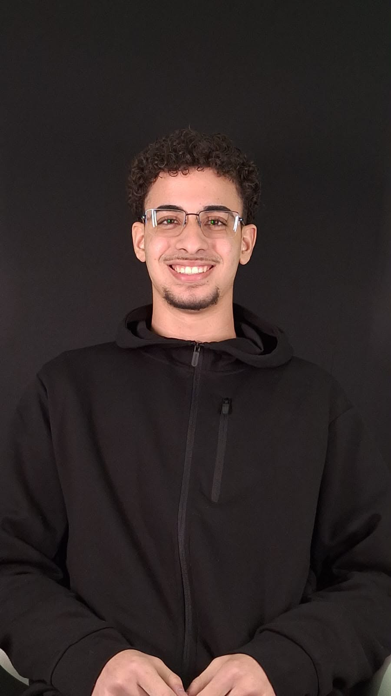

Evolução constante através do código.
Me chamo Victor, tenho 19 anos e sou estudante de Ciência da Computação na UNIP. Sou apaixonado por tecnologia e busco evolução constante no desenvolvimento.
Tenho experiência com suporte em sistemas na empresa Klass ERP, atuando na resolução de problemas técnicos e atendimento.

Landing page desenvolvida para um profissional da música, com foco em identidade visual moderna e animações suaves.
Projeto real
Página de apresentação para uma adega com foco em design moderno e experiência visual de produto.
Protótipo de venda
Esse foi um dos meus primeiros projetos, uma landing page para um restaurante fictício, com foco em design moderno e experiência visual de produto.
Projeto fictício
Projeto desenvolvido em um Hackathon da PUC, voltado à criação de soluções inovadoras para problemas reais do dia a dia. **4º lugar na competição**, com desenvolvimento colaborativo e apresentação da solução para uma banca avaliadora.
Projeto-Real